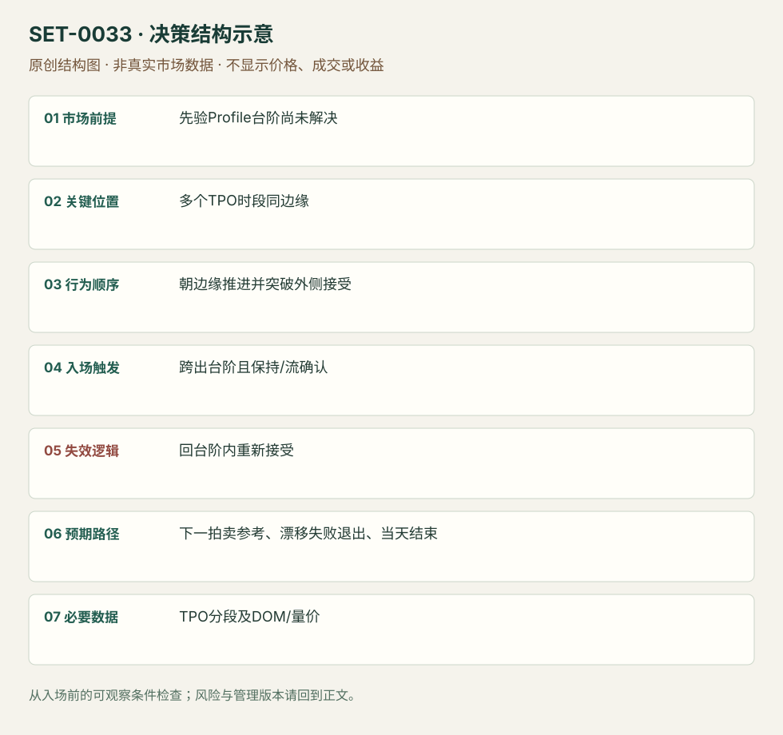

TPO 台阶的破位与接受
TPO Ledge Break and Acceptance · SET-0033 · reviewed · v1.0.0
盈利证据：not_established。审查范围与来源版本见第13节；未知字段保留缺失原因。
1. 名称与快速概览
固定 TPO 台阶由多个时段在同价附近止步形成；在上下文与实际流支持下，跨出台阶并被接受，交易拍卖边界的解决。台阶不是成交量POC，也不要求0016式逐次缩小回调。
记录口径：PA supporting；必要数据 TPO、OHLC、volume、DOM。名称性质：来源术语或研究术语。reviewed 只表示本条规则与证据记录审查通过，盈利状态为 not_established。
2. 本质与行为假说
重复停在同价提示拍卖尚未完成的结构，但“最终会修复”没有无条件时限。突破后的接受和方向行为才说明此次解决开始，而非任何越线打印。
3. 适用市场与环境
来源GBP/USD弱漂移和Bund边缘结构，适合已画出的TPO平边缘及清楚上方/下方路线。已在边缘外建立新平衡但没有方向流时，目标和节奏需重估。
来源实用市场：GBP/USD（原场所/合约未确认）、Bund期货。
Session：依原期货数据商分段；图的session/TPO参数与时区未完整说明。本库要求复盘固定分段，并在当日计划session结束前平仓。
跨市场：本版不主张已经验证的跨市场迁移；更换市场必须重定数据来源、流动性与session。
4. 出现前的观察清单
锁定TPO时段、session和台阶位置；检查是否真正多个时段同边缘、是否已有excess。单个OHLC高低相等不能自动成为TPO台阶。
5. 形成过程与状态转换
既有台阶未解决 → 朝边缘推进 → 跨出台阶 → 边缘外能保持/旧范围回测失败 → 解决方向续行。跨出却不能持久的漂移留作反例。
6. Entry trigger 与执行方式
在台阶突破且外侧被接受时顺突破进入；DOM速度/反向拍卖无力可提供确认。具体最小保持时长来源未统一，编辑执行版须选择时段/棒确认后固定，不能看结果后解释“接受”。
7. Invalidation 与止损逻辑
回到台阶内并重新接受、突破结构被否认；初始硬保护选近端结构，风险太大跳过。不能因poor high名称而无限等待回去修复。
8. Exit、target 与 trade management
下一Profile边缘/旧极值/价值边界为参照；突破漂移无加速并回到台阶内时退出。解决后新台阶是之后的参考，不是把同一图再算新setup。
9. 常见 variations
poor high/poor low 平边缘、TPO ledge上下方向是同一拍卖边界解决逻辑；是否有成交量节点作辅助为版本。
10. 失败方式与不交易条件
孤立形态没有上下文；窄价位采样造成假台阶；跨出后弱漂移无持续接受；引用未来完成Profile；“迟早修复”变成隔夜持仓。
11. 与相近 setups 的区别
12. 图表与案例解读
已看GBPUSD和Bund两图，含TPO与价/量。GBPUSD后段反转提示机械破位不能代表持续方向；静态图未核对DOM速度。
- [VIS-000035] Late day break lower through the ledge creating the drift move；定位：Ledge1 resolved GBPUSD example。图中ledge突破后只是弱漂移，后来反向加速，展示接受不足的边界。 验证：chart_viewed。
- [VIS-000036] Breakout higher after ledge has been tested from both side and higher low created；定位：Bund resolved ledge as subsequent reference。台阶解决后旧区成为新参考；Higher Lows是后续行为，不能全算初始突破条件。 验证：chart_viewed。


本地原创示意（VIS-000090，非真实市场数据）：

小屏阅读可打开原尺寸示意图并缩放。

此图用于对照识别顺序与风险定义；不计入真实案例覆盖率。
视觉材料元数据与查看范围
- VIS-000035 · real_source_chart / structure_and_trigger / chart_viewed
品种：GBP/USD期货；日期：未知/不适用；周期：未知/不适用；时区：未知/不适用
日期未在图中核对；周期未在图中核对；时区未在图中核对；来源图表不是成交审计 - VIS-000036 · real_source_chart / structure_and_trigger / chart_viewed
品种：Bund期货；日期：未知/不适用；周期：未知/不适用；时区：未知/不适用
日期未在图中核对；周期未在图中核对；时区未在图中核对；来源图表不是成交审计 - VIS-000090 · synthetic_structure_diagram / illustration_only / generated_not_market_evidence
品种：未知/不适用；日期：未知/不适用；周期：未知/不适用；时区：未知/不适用
无真实品种、日期或价格：这是结构示意
13. 证据、分歧与未知项
主要同Axia家族实践，独立佐证有限；图中既有解决也有后段失败，不推出成功率。TPO与Footprint未完成拍卖的零Bid/Ask不是相同数据定义。
- [EVD-000066] Axia Futures，《How To Trade A Market Profile Ledge》，SRC-0010；定位：Ledge 1 resolved / subsequent ledge reference。支持：多个TPO阶段同价边缘组成ledge，突破后要判断是否保持；弱漂移也可能反转，已解决的ledge可成为新参考。
- [EVD-000067] Axia Futures，《Trading Strategies Around Poor Lows And Poor Highs》，SRC-0062；定位：poor high/poor low trading strategies。支持：缺少excess的平边缘是潜在待解决结构；必须结合流和接受，不应机械假设一定修复。
审查边界：来源份数与独立核心核验分开；当前类别为 limited_single_family。正文中的概念、官方事实、衍生解说或同族资料只按其支持范围使用。
14. 可用于复盘的检查表
- ☐ 下单前的前提可核对：先验Profile台阶尚未解决
- ☐ 事前标记位置：多个TPO时段同边缘
- ☐ 行为按顺序出现：朝边缘推进并突破外侧接受
- ☐ 实际触发符合选定版本：跨出台阶且保持/流确认
- ☐ 事先写明本次否定条件：回台阶内重新接受
- ☐ 目标/路径只用当时已知信息：下一拍卖参考、漂移失败退出、当天结束
- ☐ 数据满足 TPO分段及DOM/量价；记录时间、点差、滑点、队列和未成交
- ☐ 记录截止平仓及规则偏离；正常亏损不事后改成“未成立”
15. 后续验证问题
接受需要多少时段可操作？TPO采样改变台阶数量多少？修复比例是否随旧结构年龄变化？
双向相关导航
- SET-0016 反复逼近固定边界的压力突破 0016 必须反复攻击且回调缩小，只有平边缘不够；本条依TPO拍卖台阶并观察外侧接受。
- SET-0034 台阶久攻不破后的反向持仓退出 0034 等台阶解决反复失败后，从相反边缘的加速撤仓进入。